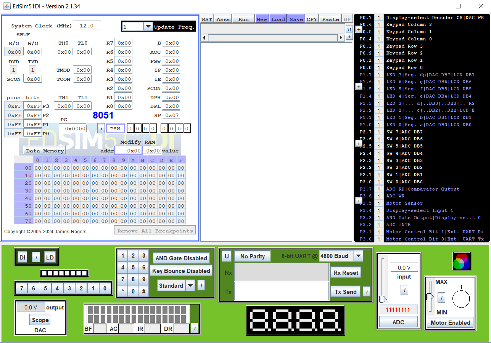

退火 上
Last updated on January 24, 2025
Contents
16週內吞下18週課業大禮包真的是讓人喘不過氣來，可不可以改改啊
這是筆者上完這學期課後的唯一心得。想不到這學期的繁忙程度甚至跟上學期相當。相較於中央的朋友，筆者這學期比他們多了 ~3 科期末考[1]和 2 個 final project，還要頂著演算法地獄、以及差點開天窗的 ML final project 壓力過完這學期。
總之，可喜可賀的是 GPA 沒有炸掉，筆者真是精算師 誤。
大重點
為什麼演算法是大魔王
筆者選的是韓永楷老師開的演算法。筆者被心得中說的「這位老師比隔壁班教得好很多」蒙蔽了雙眼，忽略了躲藏在暗處中的 給分不甜 這四字背後的沉重。在三段滿分為 105/105/120 的配分下，平均只有 50.2/37.6/59.3，而且不調分，造就了以下奇景：

平均 GPA 只有 2.134；百分比平均64.28，標準差18.41
造就低平均的原因有數：
- 每題都相當於在寫申論題：演算法過程、正確性證明、複雜度證明三項皆不可或缺。第一項寫不出來或思路寫錯基本上就是無可挽救的 0 分。即使寫出來了後面兩項說明過程也很容易因為
Minor Error被扣分（3）。 - 考題有一定的難度（尤其是期中），且一定有防破台題。
- 批改過程相當嚴格，只要有一處寫得不夠嚴謹就等著被扣光，去要分甚至會被倒扣[2]。
- 主要原因：總成績是純考試定勝負，平時作業是 自願完成（看似有選擇其實沒有）。細節可以看 Dcard 上更加詳細的文。
期初那鬼成績出來後，筆者的某位朋友就跟著其他 40 人一起果斷二退了，甚至來不及見到期中如同地獄般的景象。退了會低修所以沒有退路的筆者，只好跟另外一位電神加緊討論頻率硬是撐過了這學期；即使如此最後也只能乾巴巴地望著隔壁班高了 10~20 分的總平均。
期中那險象也促使筆者提前算好了這學期的保底 GPA，幸虧預估結果還算勉強過得去，壓力少掉不少。（最後也符合預期結果）
但不得不說，老師的教課邏輯與上課氛圍是真的好，再複雜的主題經過說明也能馬上理解並吸收，可惜配上的是讓大多數人退卻的分數。[3] 如果可以融合隔壁班分數好的特點，相信一定會成為熱門課。這種事要等到下輩子了，夢裡什麼都有
Final project 在做什麼
這學期有兩個 final project，分別是 ML 與 OS 的。其中 OS 難度相對來說低很多，且只要照訂好的進度走就好了，先不提。至於 ML 是在學期初就要訂一個自由研究的主題，筆者這組最後決定做可以將渲染出來的 LaTeX 圖片反推回去語法的 NN。最後架構採用了 CRNN + Attention（不然根本 train 不起來 ##）。CNN 用 variable-sized input 最後接個 GAP；RNN 用 LSTM。

上述聽起來很直接，但因為主題挑戰性太高，中途差點就開了天窗。有鑑於主題、架構都是學期初就要決定，我們只能在還在學基本的 NN 的狀況下花了大把大把的時間才搞懂 CRNN 架構（已經是學期末才會教到的主題）。實作時問題又層出不窮：Tensorflow 的 GPU 加速不支援 Windows、CRNN 學得不精導致看不懂 code、chatgpt 大法出來的幾乎不會改，導致重大 bug 一直存活到專案中後期才被筆者挑出來（累癱）。最後對前人用的 CNN 架構進行魔改後才跑出比較好的成果 owo。

聽說前幾屆抄襲也蠻嚴重的，repo 還是不要公開好了
突然蹦出的 side-project
恐懼就是最好的動力。要開天窗時筆者跑去把某個主題廢案 Picture Mosaic 花了兩天研究並整合一下主流程就做好了。原本是要拿成品當作後備 final project，但其簡單程度似乎又不太適合當專案，讓筆者相當為難。幸好終究是沒有用上的一天，鬆了一口氣，就當作筆者的 side-project 就好。
這個主題的目標是用多張小圖片去擬合出目標圖片。筆者用的資料庫是由 SAO SE3 每五秒截一次圖得來的 5984 張照片（僅限學術用途）所組成。核心則是使用了 sklearn.neighbors 套件中的 NearestNeighbors，以 RGB average 作為 distance metric 去找出資料庫中最適合的圖片。以下是一些結果[4]：
每張圖片都是由 $200 \times 200$ 張小圖片擬合而成
有興趣的讀者可以猜猜看每張小圖片是來自於哪一集


製作過程中，筆者發現瓶頸根本就不是原先猜想的 matching（這部分瞬間就完成了），而是 match 後產生最終圖片的過程。最終是從 matplotlib 換成專門做影像處理的 pillow 套件再手搓個圖片 buffer 才把生成過程加速到可以接受的時間尺度內。雖然還有很多可以改進的東西（像是不同的 distance metric），但最後沒時間就沒繼續做下去，不過已經是一個可運作且相當好玩的專案捏uwu。
上課心得
隨興的密碼學
CS 330500 | 密碼與網路安全概論
Cryptography and Network Security
Cons:
要不是筆者期末被其他科搞到焦頭爛額，終於忙完後回過頭來才發現填寫期末評量的時期已經溜走了，否則一定會針對這門課寫長篇大論。既然沒辦法寫期末評量，那就寫在這裡吧 owo：
- 助教不知變通：不論是在DE還是丟番圖方程，只要是特解都不唯一。期初考時助教卻死板板地完全照著教授給的答案改，不是上面寫的特解都不給分；讓人懷疑是不是沒學過數學，還是不懂得批判性思考，全聽教授的話。雖然後來有改，代表至少會接納學生的觀點，但這離譜行為也直接導致大家要分時場面極其混亂，各處都在上演辯論大賽（畢竟怎麼可能只有這點問題）。期末考時題敘有關複雜度的用詞也根本就用錯了，因為正解是一個常數而非增長趨勢。甚至有學生寫上 $O(2^{56})$ 也被納入正確答案，相當懷疑助教是不是根本沒學過複雜度定義，否則唬爛個 $O(1) \equiv O(2^{56})$ 也沒問題。百思不得其解的是：只要沒明確寫出正確數字就依然不算分，即使把已經用到的常數數值全寫出來。這已經不在算數好不好的範疇裡了，純粹是為了搞人心態。
- 教授出課堂作業非常隨興：幾乎沒有預訂好的作業主題，都是將當下講到的東西隨興出成作業。要不是班上剛好有位問問題相當有水準的人[5]，可以讓教授把她的問題直接拿來當成作業主題，筆者相當懷疑原本的作業主題應該會是甚麼。
有一次還出了要對其他人做社交工程的奇妙作業。作業本身是有意義的，但在沒考慮到細節之下最後還是因種種原因取消了。[6] 詳情可以看這篇文。
Pros:
不過助教確實也有些還算好的地方，例如不在期末另外加作業，還有ppt做得還算用心。隨興的上課方式也讓上課涼度升高，上到一半會以為自己在修通識課。總體來說也確實有學到東西，雖然期初還有沒發揮到甚麼作用加簽考，跟日本製的壓縮機一樣非常稀有。
成績：A+ | 1/70
還算有趣的 ML
CS 460200 | 機器學習概論
Introduction to Machine Learning
因為筆者以往常常質疑 ML 能力上限與運作原理，所以打算來修一次課一探究竟。雖然最終有鑑於我們學的幾乎都是初級架構，疑問還是沒有破除，但在看了最近幾個研究後有稍微減輕一點。
教授還蠻接地氣的[7]，也有顏值。因為 lab 作業是要用助教給的模板手刻 NN，相當需要與同學討論；再考慮到 final project 的部分，所以這堂課比較吃隊友能力。每次 lab 要花個 1, 2 天寫好架構，做好資料處理[8]，並重複以下事項：
- 隨便 train 好 basic part
- 丟 kaggle
- 看結果，爛掉的話回到 (1)
- 改 advanced part 的 model
- 開始 train，死魚眼地盯著 training loss 有沒有掉
- 看 validation
- 沒有比較好的話回到 (4)
- 有潛力的話丟 kaggle
- 看結果，爛掉的話回到 (4)，還有找 chatgpt 求救
- commit checkpoint，想繼續卷 performance 的話回到 (4)
- 累死
如果你是負責模型的部分，這輪迴會在弄 final project 的時候變成日常（丟 kaggle 以外的部分）。

這堂課今年似乎是因為第一次出 closed book 考試，期初考的難度甚至跟 open book 相當，而且相當多搞人題，寫起來個人評價不是很高。這種現象在後續幾次考試有慢慢減輕，雖然有些東西還是蠻背多分的。
成績：A+ | 1/246，聽說有 40 多人 A+
穩穩的量子運算
CS 539100 | 量子計算概論
Introduction to quantum computing
筆者高一/二時就開始學量子運算了，有打下基礎（除了中間離開這環境大概 2.5 年）。大二學過線性代數後從新的認知角度重新回來學一遍，大部分先前卡住或沒辦法理解的概念直接迎刃而解（基本上全都是線性代數）。加上筆者在開學前的暑假已經提早把去年的上課錄影全啃完了，所以開學後基本上都在學自己的部分（像是 Ch.9 的 Quantum Information），還有讀老師指派的 paper。
雖然期初滿分、期末接近滿分（110/120），但跟同學討論的過程中還是發現很多相當好的思想。果然筆者在一些問題上還是會想得太複雜，討論還是相當重要！順便把 Notes、HW (& draft)、還有 Scribbles 放在這邊 owob。
https://drive.google.com/drive/folders/1Pe70Ecg1NXu7riFKFpW1bx-uWZ291X0Y?usp=sharing
比較可惜的是因為今年終於把配分分布調得好看一點（往年是 uniform distribution）、二退退了快 20 人、且是碩班課的加成下，即使在班排一的狀況下 T 分數也僅有 59.89 分，無法成為緩衝液。

成績：A+ | 1/20
不知道發生啥事的 IBM Q 帳號
在放了兩次颱風假又有國慶假的狀況下，還能加入前幾年沒有的小小的實作環節屬實令人驚嘆[9]。但筆者要登入 ibm quantum 時卻發現自己之前的舊帳號完全登不進去，後續又搞了一堆東西，超級氣。最後填了解封申請才弄好，ibm q 改版後到底在做啥？[10]

上課方式有點水的 OS
CS 342302 | 作業系統
Operating Systems
這堂課的上課方式筆者非常不適應。教授本人除了第一堂之外，其他時間完全沒有出現，只在課程網頁放了 6, 7 年前的 OCW 系列讓我們定期自己安排看，水到極致。[11] 就算忽略這點，影片內容比起隔壁班周志遠老師的 OCW 來說也差太多。隔壁班即使有 OCW 也還是會上實體課。
雖然老師口條非常好（英文完全沒有口音），但 80% 的時間都在照本宣科，順暢地帶過去也沒有點出重點，跟心得上講的完全一模一樣。這種方式上了 3 小時後真的會頭昏腦脹，所以筆者在開學兩個禮拜後就直接跳槽周志遠老師的 OCW 了，教得超級好uwub。雖然教到我們這班特有的 edsim51 （同時是 project 在做的東西）還是要轉回來看 OCW 就是了。
既然提到了 edsim51，就順便講一下我們 project 在做什麼。

Project 分成了五個 checkpoint：
- 幫 edsim51 寫一個 cooperative multithreading package，然後在上面跑 single-buffer producer-consumer model。
- 把 (1) 改成 preemptive 版本
- 實作 semaphore，然後跑的東西改成 classical bounded-buffer。
- 跑的東西延伸成 two producers and one consumer
- 把 two producers and one consumer 模型套用在 peripheral devices 上，最後寫一個類似斷網小恐龍的遊戲。
(5) 的遊戲部分要實作的東西真的太多了，而且還是在期末考狂熱週內要完成。想當然爾在群魔亂舞的情況下當然是擠不出時間，筆者只好完成前面部分拿個部分分就好。
唯一值得修的地方就是這班比起隔壁班 loading 似乎輕很多，可以平衡一下課表總 loading。
成績：A+ | 14/135
演算法地獄
CS 431101 | 計算方法設計
Design and Analysis of Algorithms
忽略 前面 講到的之外，這堂課其實教得還算不錯，是堂會讓人想去上的課。內容可以視作之前資結的延伸：資結比較偏基礎資料結構和演算法流程，而這堂課感覺注重在分析方式、演算法的細節、還有進階資料結構上（mergeable heaps 等）。其中當然包含要自己想出來一堆演算法並對其進行分析的環節（前面提的三大環節）。
成績：A- | 21/124，直接爛到家（期中真的非常難）
終於修到的重訓
家喻戶曉，重訓在清大是極其難搶到的體育課之一，每學期必定會跟其他人搶加簽搶破頭，筆者來清大兩學期後才搶到（灑花）。上課內容是每堂教 1~2 個身體的肌群和其拮抗肌、各部位要用甚麼對應的器材去訓練、和器材的正確使用方式及姿勢。
期中考是 random 挑一個肌群，然後自己找出其與其拮抗肌對應的訓練器材後進行操作。器材挑對就直接及格，再來才是看操作的姿勢。期末考是硬舉，會特別注重在身體姿勢上（背絕對不行彎），再來才是看舉多重。老師人很好，沒看過他生氣；硬舉時也會在一旁關注你動作有沒有做對。整體來說學到的東西相當多（對筆者這種室內派來說），推推。
成績：A | 6/42
甜涼到炸開的賽局
GE 196200 | 生活中的選擇與賽局
Decision making and Games in daily life
真的不呱張，這是筆者的大學生涯以來修過考試難度最簡單的一門課。
這堂課因為國際學生很多所以採英語授課，但老師英語表達能力不太好，有時候會聽不太懂他想表達什麼。課的內容也不是嚴謹的賽局理論，只稍微擦到邊邊角角。量化的部分只需要國中程度的數學就可以了。
大部分都是在聽跟抉擇有關的故事（像是 prisoner dilemma），還有玩些奇奇怪怪的賽局遊戲。上課 ppt 很喜歡用 AI 圖，可能是為了省去找圖的時間 (?)。整學期學到的東西可能只夠筆者塞牙縫，也是平衡 loading 的一節課。
成績：A+ | 1/116
發現白做(X)的服務學習
ZY 100021 | 服務學習–聯電希望種子課輔計畫
UMC After-school Tutoring
這堂課是筆者被朋友拉著去修的。與其說是教學課，筆者反而把它當作教學完後跟朋友去巨城覓食的固定餐局。
每個禮拜要挑個 1 天左右去新竹大遠百附近的小空間去陪一些缺乏學習動力/需要社交輔助的小朋友（國小~國中）寫功課、陪玩。期末要去教個 2 小時的課程，這部份雙倍計時；加起來一學期要做滿 30 小時。
與其說在訓練教學能力，不如說是在訓練耐心。因為小朋友大多時間都不受控，我們這些老人教的方式也不見得馬上聽得懂，而且亂寫作業其實還蠻常發生的（例如：假裝聽得懂但其實只是把你說的照抄上去，或是亂猜答案，或是不想寫作業）。筆者原本想用神奇數學荼毒小朋友，卻發現他們根本沒有能力被荼毒 百毒不侵，計畫還沒開始就失敗了。
做到學期末時清大終於屈服於教育部的公文之下公布了服務學習畢業門檻取消的決定，而且溯及既往。賭注大勝利！
成績：A+
遲來的書卷獎
筆者在大二上時因為耍笨沒有及時停損讓服學被當，所以到手的書卷飛了；大二下發現自己服學又不會過時就馬上停損，書卷獎順利到手。
筆者還蠻喜歡這種小東西，所以只能全程出席頒獎典禮才拿得到（同時刷演算法考古嗚嗚嗚）

雖然很難相信是從一個大三老人口中說出來，但筆者發現自己有點太注重課業了，導致生活重心完全在其之上，每天都是教室宿舍兩點一線，極少專注在自身的需求上。一部分是因為要走推甄、一部分則是 loading 真的還是偏重，不得不弄；另外一部分可能是筆者的自我要求過高，給自己太多壓力。
所以下學期筆者打算調整一下 loading 比重，修一些養老的課轉移生活重心，多花一點時間在自己身上。
後記
因為想寫的東西太多了，所以只能分成上下篇來寫。下篇 將會圍繞在生活大小事上，敬請期待 uwub。
參考
- 期末考狂熱週再次降臨 ↩
- 筆者就被這個搞，期中少了5分（氣。 ↩
- 聽說是因為前陣子疫情期間被集體作弊搞過，
信任度--;。 ↩ - 因應資料庫圖片大小，每張圖片丟進去後會對大小進行微調。觀察入微的話就會發現每張小圖片真的都是 SAO SE3 的某幀 owob。 ↩
- 像是證明課本上的通式確實包含丟番圖方程的所有解 ↩
- 主要是因為公布的同學信箱中有人是用公務信箱，怎麼想都不適合被傳 spam mail。 ↩
- 貌似會看 Dcard，還有ppt末頁的梗圖不知道是不是也出自於他之手。 ↩
- 相當相當重要 ↩
- 筆者台大物理系的朋友那邊的 QC 狀況就沒這麼好了，課甚至會從下午 2 點上到晚上 7 點，相當折磨。 ↩
- 不知道甚麼時候起跑 jobs 已經改成有限額的了，開始斂財。 ↩
- 似乎是這位老師的習慣，他教的另外一堂 python 課也有相同的現象。 ↩